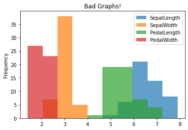
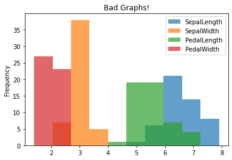

Histograms¶
Next we look at many quantititative variables. Looking at the histogram allows us to get an idea of the shape of the distribution.
import pandas as pa
df = pa.read_csv('https://raw.githubusercontent.com/nurfnick/Data_Viz/main/Data_Sets/iris.csv')
df.SepalLength.plot.hist()
<matplotlib.axes._subplots.AxesSubplot at 0x7fbf0139b590>
You can get all the data in a histogram rather quickly!
df.hist()
array([[<matplotlib.axes._subplots.AxesSubplot object at 0x7fbf020eb0d0>,
<matplotlib.axes._subplots.AxesSubplot object at 0x7fbf01fb9d90>],
[<matplotlib.axes._subplots.AxesSubplot object at 0x7fbf018340d0>,
<matplotlib.axes._subplots.AxesSubplot object at 0x7fbf019916d0>]],
dtype=object)

Number of Bins¶
Remember to look at multiple bin widths when doing a histogram it may make a difference in the display of your data! The default is 10 which is not bad here.
df.SepalLength.plot.hist(bins = 100)
<matplotlib.axes._subplots.AxesSubplot at 0x7fdda6826bd0>

100 was too many and 5 too few.
df.SepalLength.plot.hist(bins = 5)
<matplotlib.axes._subplots.AxesSubplot at 0x7fdda620acd0>

25 bins gave a little more clarity to how the data was distributed.
df.SepalLength.plot.hist(bins = 25)
<matplotlib.axes._subplots.AxesSubplot at 0x7fdda639b9d0>

Density Shows Much the Same as Histograms¶
Densitied can give you a similar view to the histogram.
df.SepalLength.plot(kind = 'density')
<matplotlib.axes._subplots.AxesSubplot at 0x7fdd931bf910>

Playing with the method can give you more detail but can also lead to overfitting.
df.SepalLength.plot(kind = 'density',bw_method = 0.3)
<matplotlib.axes._subplots.AxesSubplot at 0x7fbef10f7510>

Multiple Data Points¶
Often we want to see if the distributions differ on another categorical variable. Here we look at SepalLength by Class.
df['SepalLength'].hist(by = df['Class'])
array([[<matplotlib.axes._subplots.AxesSubplot object at 0x7fbef1000610>,
<matplotlib.axes._subplots.AxesSubplot object at 0x7fbef0fb6410>],
[<matplotlib.axes._subplots.AxesSubplot object at 0x7fbef0f79a10>,
<matplotlib.axes._subplots.AxesSubplot object at 0x7fbef0f25b10>]],
dtype=object)

One of the issues in the above graph is that the axis do not match. Can you fix that?
Below I put them all together on the same axis. The alpha value makes them transparent.
df.groupby('Class').SepalLength.plot.hist(alpha = .7)
Class
Iris-setosa AxesSubplot(0.125,0.125;0.775x0.755)
Iris-versicolor AxesSubplot(0.125,0.125;0.775x0.755)
Iris-virginica AxesSubplot(0.125,0.125;0.775x0.755)
Name: SepalLength, dtype: object

Some Things to Avoid¶
Putting non-comparable data on the same axis is easy but not appropriate! The following don’t really make any sense since we should not be comparing length and width on the same axis!
df.groupby('Class').plot.hist(alpha = .7, title = "Bad Graphs!")
Class
Iris-setosa AxesSubplot(0.125,0.125;0.775x0.755)
Iris-versicolor AxesSubplot(0.125,0.125;0.775x0.755)
Iris-virginica AxesSubplot(0.125,0.125;0.775x0.755)
dtype: object

 

Here is another that doesn’t make any sense as the data should not be comparable!
df.plot.hist(title = "Bad Graph!")
<matplotlib.axes._subplots.AxesSubplot at 0x7fdda38f49d0>

Your Turn¶
Look at NYC Air B&B, provide a histogram of the price and a histogram of the price broken down by ‘neighbourhood_group’. Make sure to give titles! Play with bin size to find appropriate shape. Comment on why you are seeing so little of the data and how you might see more.